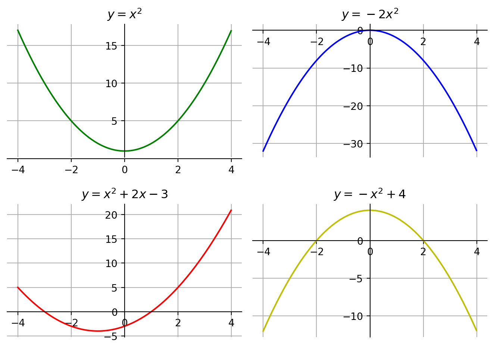
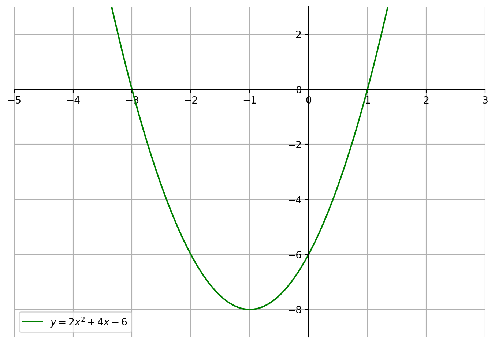

11 Andengradsligningen
11.1 Historisk introduktion
Vi begynder med at kigge følgende ligningssystem:
\[ \begin{aligned} y&=x+p \nonumber \\ x \cdot y &= q \end{aligned} \]
Dette ligningssystem er første gang præsenteret i verdens mest kendte og mest succesfulde lærebøger om matematik, nemlig Euklids Elementer, der stammer fra det tredje århundrede før kristi fødsel. I mange hundreder år efter tilblivelsen og helt frem til ca. 1910 var Euklids Elementer obligatorisk læsning for alle matematikstuderende på gymnasier og universiteter. Euklids Elementer overgås kun af Biblen i antallet af udgivelser (over tusinde forskellige).
For at være tro mod ligningssystemets oprindelse kigger vi på \(p\) og \(q\) som positive tal. De negative tal var slet ikke “opfundet” på den tid. For at begynde i det helt simple, lader vi både \(p\) og \(q\) være hele positive tal, og vi antager altså, at \(p,q \in \mathbb{N}\).
Euklids Elementer og matematikken på den tid handlede udelukkende om geometri. Så vi vil forsøge at gå i de historiske fodspor ved at fortolke ligningssystemet geometrisk. Den anden ligning fortolkes som et areal af et rektangel med siderne \(x\) og \(y\), hvor arealet skal være givet ved størrelsen \(q\). Endvidere skal der ifølge første ligning gælde, at den ene side, \(y\), er \(p\) større end den anden side \(x\). Hvis vi substituerer udtrykket for \(y\) i nederste ligning fås:
\[ \begin{aligned} x \cdot y &= q \Rightarrow x \cdot (x+p) = q \Leftrightarrow x^2+px=q \end{aligned} \]
Ligninger på formen \(x^2+px=q\) kaldes andengradsligninger fordi ligningen indeholder ledet \(x^2\), der samtidigt har den største eksponent, nemlig 2. Denne andengradsligning kan, som vi har argumenteret for, fortolkes geometrisk som at kvadratet med sidelængerne \(x\) og rektanglet med siderne \(x\) og \(p\) tilsammen skal have arealet \(q\)
Hvis \(p=4\) og \(q=21\) er det (relativt) nemt at se, at \(x=3\). Men hvad nu hvis \(p\) og \(q\) er andre hele positive tal. Hvordan kan vi så bestemme, hvad \(x\) skal være? Du kan jo prøve at tænke over en mulig fremgangsmåde, inden du læser videre.
Idéen er at “complete the square” og først få den (skøre) idé at omskrive ligningen
\[ \begin{aligned} x^2+2\frac{p}{2}x + \left(\frac{p}{2} \right)^2 - \left(\frac{p}{2} \right)^2 = q \end{aligned} \] De første tre led kan skrives som en kvadratsætning som følger:
\[ \begin{aligned} (x+\frac{p}{q})^2 - \left(\frac{p}{2} \right)^2 = q \end{aligned} \]
Det smarte ved denne omskrivning er, at vi kan løse denne ligning. Vi gør som følger:
\[ \begin{aligned} &(x+p/2)^2 - \left(\frac{p}{2} \right)^2 = q \Leftrightarrow \\ &(x+p/2)^2 = q + \left(\frac{p}{2} \right)^2 \Leftrightarrow \\ &x+p/2 = \sqrt{q + \left(\frac{p}{2} \right)^2} \Leftrightarrow \\ &x=\sqrt{q + \left(\frac{p}{2} \right)^2} - p/2 \end{aligned} \] Hvis \(p=4\) og \(q=21\) som tidligere kan vi nu rent faktisk udregne x-værdien.
\[ \begin{aligned} x&=\sqrt{21 + \left(\frac{4}{2} \right)^2} - 4/2 \\ &= \sqrt{21 + 2^2} - 2 \\ &= \sqrt{25} - 2 \\ &= 5-2 \\ &= 3 \end{aligned} \]
Rent matematikhistorisk er vi nu færdig med løsning af andengradsligninger på formen \(x^2+px=q\) repræsenteret ved arealet af et kvadrat plus arealet af et rektangel, der skal have et samlet areal lig \(q\).
Hvis vi nu spoler tiden frem fra ca. trehundrede år før kristi fødsel til nu er vi ikke helt færdige, for der er en løsning mere. En løsning der kræver indførelse af negative tal. En løsning der derfor rent arealmæssigt ikke tillader nogen pæn geometrisk fortolkning, men rent algebraisk løser den andengradsligningen.
Husk at ligningen \(x^2=9\) har to løsninger, nemlig \(x=\sqrt{9}=3\) og \(x=-\sqrt{9}=-3\) idet der gælder, at \(3^2=9\) og \((-3)^2=9\). Helt generelt gælder, at \(x^2=k\) har løsningerne \(x=\sqrt{k}\) og \(x=-\sqrt{k}\) når \(k\) er et vilkårligt positivt reelt tal.
D.v.s vi med indførelse af negative tal er nødt til at modificere udregningerne ovenfor og skrive:
\[ \begin{aligned} &(x+p/2)^2 = q + \left(\frac{p}{2} \right)^2 \Leftrightarrow \nonumber \\ &x+p/2 = \pm \sqrt{q + \left(\frac{p}{2} \right)^2} \Leftrightarrow \nonumber \\ x&= \pm \sqrt{q + \left(\frac{p}{2} \right)^2} - p/2 \nonumber \\ &= - p/2 \pm \sqrt{\left(\frac{p}{2} \right)^2 + q} \end{aligned} \]
At der bliver flyttet rundt på leddene i sidste linje er der umiddelbart ikke nogen grund til, men det letter de beregninger, der følger lidt senere.
Hvis vi igen har \(p=4\) og \(q=21\) har vi også løsningen \[ \begin{aligned} x&=-\sqrt{21 + \left(\frac{4}{2} \right)^2} - 4/2 \\ &= -\sqrt{21 + 2^2} - 2 \\ &= -\sqrt{25} - 2 \\ &= -5-2 \\ &= -7 \end{aligned} \]
Undervejs har vi kun kigget på \(p\) og \(q\) som værende positive hele tal og vi antog til at begynde med, at \(p,q \in \mathbb{N}\). Men det krav er strengt taget ikke nødvendigt. \(p\) kan være ethvert reelt tal, men når først \(p\) er valgt, skal der gælde, at \(\left(\frac{p}{2} \right)^2 + q \geq 0\) for vi kan ikke tage kvadratroden af et negativt tal. Alt i alt kan vi sammenfatte i følgende sætning:
11.2 Andengradspolynomium
Mono betyder en og poly flere. Et Andengradsmonomium vil f.eks være \(x^2\) eller \(6x^2\). Et andegradspolynomium vil i stedet være som i nedenstående definition
Grafens udseende afhænger af værdierne af konstanterne \(a, b\) og \(c\).
Bevis
Vi indsætter \(x=0\) i funktionsforskriften i Definition 11.2
\[ f(0) = a \cdot 0^2 + b \cdot 0 + c = 0+0+c =c \] \(\square\)
En parabel skærer ikke nødvendigvis \(x\)-aksen. Det ses eksempelvis på grafen øverst til venstre.
En grafs skæringspunkter med \(x\)-aksen findes ved at løse ligningen \(f(x)=0\)
Kigger vi igen på grafen øverst til venstre skal vi løse ligningen
\[ \begin{aligned} x^2+1&=0 \Leftrightarrow \\ x^2&=-1 \Leftrightarrow \\ x &= \sqrt{-1} \end{aligned} \] Men vi kan ikke tage en kvadratrod af et negativt tal. Ikke indenfor de reelle tal i hvert fald. Det kan lade sig gøre inden for de komplekse tal, men det er for nu en anden historie.
Ovenstående eksempel kan sammenfattes i følgende sætning:
Bemærkning:
Løsningerne til andengradsligningen \(x^2=p\) bestemmes som kvadratrødder.
Generelt bruges ordet rod/rødder om løsningen/rne til ligningen \(f(x)=0\).
Grafisk kalder vi disse \(x\)-værdier for nulpunkter.
Spørgsmålet er nu: Hvilke parabler skærer \(x\)-aksen? Hvilke andengradspolynomier har reelle løsninger til ligningen \(f(x) = 0\). M.a.o; hvilke andengradspolynomier har reelle rødder? Svarene på disse spørgsmål sammenfattes i følgende sætning
Bevis
Beviset føres ved at få to “gode idéer. Den første er at gange igennem med \(4a\) og den anden er at lægge diskriminanten til på begge sider af lighedstegnet. Til sidst bruges en kvadratsætning. Herved fås følgende udregninger:
\[ \begin{aligned} ax^2+bx+c &=0 \Leftrightarrow \\ 4a \cdot (ax^2+bx+c) &= 4a \cdot 0 \Leftrightarrow && \cdot 4a \\ 4a^2x^2+4abx + 4ac &= 0 \Leftrightarrow \\ 4a^2x^2+4abx + 4ac + b^2 - 4ac &= 0 + b^2-4ac \Leftrightarrow && + \text{diskriminanten} \\ 4a^2x^2+4abx + b^2 &= d \Leftrightarrow \\ 2^2a^2x^2+ 2 \cdot 2axb + b^2 &= d \Leftrightarrow \\ (2ax + b)^2 &= d \Leftrightarrow && \text{Hvis } d \geq 0 \\ 2ax + b &= \pm \sqrt{d} \Leftrightarrow \\ 2ax &= -b \pm \sqrt{d} \Leftrightarrow \\ x &= \frac{-b \pm \sqrt{d}}{2a} \end{aligned} \]
Hvis \(d=0\) reduceres løsningen til \[ x = \frac{-b \pm \sqrt{0}}{2a} = \frac{-b}{2a} \] Hvis \(d>0\) har man to løsninger. En med negativ kvadratrod og en med positiv kvadratrod som givet i sætningen.
\(\square\)
11.2.1 Nutidens løsning og den historiske løsning til andengradsligningen
Hvis vi sammenligner med den nuværende andengradsligning med den historiske ligning ser vi, at der må gælde, at \(p=b/a\) og \(q=-c/a\). Dette kan vi substituere ind i løsningen til den historieske i Sætning 11.1 og med en del algebra nå vi frem til den mere kendte løsning af andengradsligningen.
\[ \begin{aligned} \sqrt{\left(\frac{p}{2} \right)^2+q} &= \sqrt{\left(\frac{b}{2a} \right)^2 -c/a } =\sqrt{\frac{b^2}{4a^2} -c/a } \\ &= \sqrt{ \frac{b^2}{4a^2} - \frac{4ac}{4a^2}} = \sqrt{\frac{b^2-4ac}{4a^2} } \\ &= \frac{\sqrt{b^2-4ac}}{\sqrt{4a^2}} = \frac{\sqrt{b^2-4ac}}{2a} \end{aligned} \]
Til sidst sætter vi leddene sammen og får:
\[ \begin{aligned} x&=-b/2a \pm \frac{\sqrt{b^2-4ac}}{2a} = \frac{-b \pm \sqrt{b^2-4ac}}{2a} \\ &=\frac{-b \pm \sqrt{d}}{2a}, \qquad d=b^2-4ac \end{aligned} \]
Hvis vi tegner grafen for \(y=2x + 4x - 6\) ser vi, at denne parabel skærer \(x\)-aksen i punkterne \((-3,0)\) og \((1,0)\).
